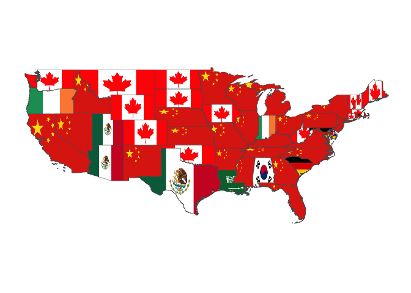
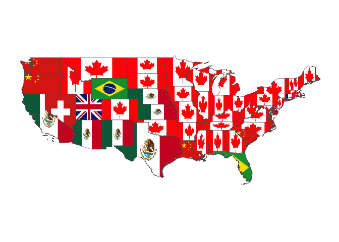
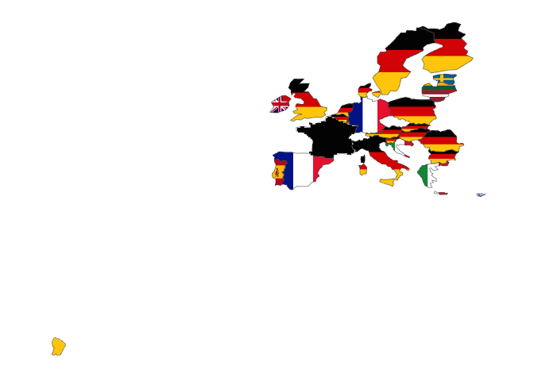

Mapping Economic Partners with flagfillr
🇨🇨 🇨🇽 🇵🇹 🇩🇴 🇫🇲 🇰🇷
Recently I wrote a little package for R called flagfillr (you can read more details here). One of the main reasons I made this is because I had seen a few maps of economic partners, for example this one, from here:

These types of maps (some more here, of the US) are interesting visual summaries, but they look a little Excel to me (sorry, whoever made it!). I thought I could spice them up with flags, cos hey, who doesn’t like cool flags (like Bhutan, 🇧🇹, awesome!)
Enter flagfillr
With flagfillr, the above map can easily be created. Once you have a data.frame of the data (here I refer to it as DF), you can do it with one line:
flagfillr::flag_fillr_data(data = DF, country = "Brazil", resolution = "large",
size = "250")Which, if your data corresponds to the map above, will give you this:

Mapping Economic Partners
So how can you do this for another country? Let’s take the example of Australia, from data available here. First of all, we’ll need to put our data into a dataframe, preferably with columns named country, state and partner, just to keep things simple. Simple is good. I’ll use dplyr here (don’t forget you’ll have to install flagfillr, see here). Since Australia’s main trade partners by state are basically China and Japan, let’s choose the third biggest trade partner by state, just to keep things interesting.
library(dplyr)
library(flagfillr)
library(plotly)
oz <- tibble(
country = "Australia",
state = c("Northern Territory", "Western Australia", "New South Wales",
"South Australia", "Victoria", "Queensland", "Tasmania",
"Australian Capital Territory"),
partner = c("India", "United Kingdom", "South Korea", "Malaysia", "New Zealand",
"India", "Malaysia", "Malaysia")
)
flag_fillr_data(oz, country = "Australia", type = "state", size = "250",
partner_col = oz$partner, state_col = oz$state)It’s not surprising that we see these countries here (the principal partners are China, Japan and India). Indeed, for many countries, the main economic partners are not a surprise. Let’s take a look at the mainland United States. We can recreate these plots with flagfillr (for more detailed data see here), and make them a little prettier (they come from here).


First, let’s make the data:
states <- state.name
imports <- tibble(
state = states,
partner = NA_character_
) %>%
mutate(partner = case_when(
state %in% c("Oregon", "Indiana") ~ "Ireland",
state == "Louisiana" ~ "Saudi Arabia",
state == "Alabama" ~ "South Korea",
state %in% c("South Carolina", "Maryland", "Rhode Island") ~ "Germany",
state == "Delaware" ~ "United Kingdom",
state %in% c("Texas", "Arizona", "Utah") ~ "Mexico",
state %in% c("Washington", "Montana", "Wyoming", "Colorado", "North Dakota",
"South Dakota", "Iowa", "Oklahoma", "West Virginia", "Maine",
"New Hampshire", "Vermont", "Massachusetts", "Connecticut") ~"Canada",
TRUE ~ "China"
))
flag_fillr_data(imports, country = "United States", type = "state", size = "250",
partner_col = imports$partner, state_col = imports$state)
Maybe that’s a slightly disturbing vision to some people haha! I like to think it’s a nice reminder of how intertwined our world is. And some surprises in there…Ireland, South Korea, Saudi Arabia. Seems like Ireland exports tech products to Oregon, while Louisiana imports – you guessed it – oil from Saudi Arabia. How about the countries that these states most export to?
exports <- tibble(
state = states,
partner = NA_character_
) %>%
mutate(partner = case_when(
state %in% c("Oregon", "Washington", "Louisiana", "South Carolina") ~ "China",
state == "Nevada" ~ "Switzerland",
state %in% c("Utah", "Delaware") ~ "United Kingdom",
state %in% c("Wyoming", "Florida") ~ "Brazil",
state == "Connecticut" ~ "France",
state %in% c("California", "Texas", "Arizona", "New Mexico", "Nebraska",
"Kansas") ~ "Mexico",
TRUE ~ "Canada"
))
flag_fillr_data(exports, country = "United States", type = "state", size = "250",
partner_col = exports$partner, state_col = exports$state)
Interesting. What does Utah export to the UK? The “state export[s] a broad range of goods, including animal products, aircraft engines, automotive parts, electronics, personal care products, pharmaceuticals, sporting goods, and industrial goods such as valves, drilling tools and fuses”, supposedly. Brazil and Wyoming also have an interesting relationship, with Wyoming’s exports being chemicals and the like.
Another interesting case that makes for an arresting visualization is the internal trade of European Union. Eurostat presents it to us in this format:

But we can make it prettier! Here I skip the code, but the pattern is the same as the above two plots. You might notice French Guyana sneaking in there – it’s officialy part of France, so it’s included in the geometry column used for plotting. In the future, it’d be great to have a clean, easy way to filter it out, but right now that means messing with geometry list-columns, and that’s a bit messy.

So these are a few examples of the things you can do with flagfillr. Maybe in a future post I’ll map some state-level trade for the countries that have state flags in the package (the Netherlands, for example).